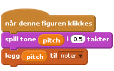

Nivå 6
Frantic Felix - Opptak
Klar!
Trykk på Lag en Liste for å lage en ny liste.

Prøv denne koden
Tøm listen før du starter.
Hver gang noe skjer, legg det til listen.

Hvis du vil ta opp flere ting samtidig, bruk en liste for hver.
Se “Avspilling” kortet for hvordan man spiller av et opptak.